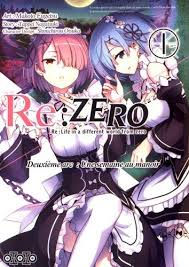

Arco 2: A Semana Tumultuosa
O "Arco 2: A Semana Tumultuosa" de Re:Zero - Starting Life in Another World
foca nos eventos que se seguem à chegada de Subaru Natsuki na Mansão Roswaal,
onde ele se torna um mordomo, juntamente com as empregadas demônio Rem e Ram,
e a guardiã da biblioteca, Beatrice.
Neste arco, Subaru se encontra em um ambiente aparentemente seguro, mas rapidamente percebe que a mansão e seus habitantes guardam segredos e perigos ocultos. Ele sofre mortes misteriosas e repetidas dentro da mansão, percebendo que sua habilidade "Retorno Pela Morte" o força a reviver os mesmos dias para descobrir a causa e evitar a tragédia.
Subaru tenta várias abordagens para desvendar o mistério por trás de suas mortes, que incluem envenenamento, ataques de feras demoníacas e até mesmo suspeitas de traição por parte dos moradores da mansão. Aprofunda-se o relacionamento de Subaru com Rem e Ram, revelando aspectos do passado delas e a complexidade de suas personalidades. Ele também busca a ajuda de Beatrice na biblioteca, que detém conhecimento valioso.
Este arco é crucial para o desenvolvimento do relacionamento de Subaru com Rem, que inicialmente desconfia dele, mas gradualmente se torna uma de suas aliadas mais leais e protetoras. Subaru é forçado a lidar com o peso psicológico de suas mortes repetidas e a solidão de carregar o fardo do "Retorno Pela Morte" sozinho, o que o leva a momentos de desespero, mas também de grande determinação.
O objetivo final de Subaru é quebrar o ciclo de mortes e garantir a segurança de todos na mansão, especialmente de Emilia, Rem e Ram, enquanto desvenda os mistérios que assombram o lugar. Este arco é uma jornada de mistério, horror e sacrifício pessoal, onde Subaru aprende a confiar nos outros e a lutar por aqueles que se importa.
Neste arco, Subaru se encontra em um ambiente aparentemente seguro, mas rapidamente percebe que a mansão e seus habitantes guardam segredos e perigos ocultos. Ele sofre mortes misteriosas e repetidas dentro da mansão, percebendo que sua habilidade "Retorno Pela Morte" o força a reviver os mesmos dias para descobrir a causa e evitar a tragédia.
Subaru tenta várias abordagens para desvendar o mistério por trás de suas mortes, que incluem envenenamento, ataques de feras demoníacas e até mesmo suspeitas de traição por parte dos moradores da mansão. Aprofunda-se o relacionamento de Subaru com Rem e Ram, revelando aspectos do passado delas e a complexidade de suas personalidades. Ele também busca a ajuda de Beatrice na biblioteca, que detém conhecimento valioso.
Este arco é crucial para o desenvolvimento do relacionamento de Subaru com Rem, que inicialmente desconfia dele, mas gradualmente se torna uma de suas aliadas mais leais e protetoras. Subaru é forçado a lidar com o peso psicológico de suas mortes repetidas e a solidão de carregar o fardo do "Retorno Pela Morte" sozinho, o que o leva a momentos de desespero, mas também de grande determinação.
O objetivo final de Subaru é quebrar o ciclo de mortes e garantir a segurança de todos na mansão, especialmente de Emilia, Rem e Ram, enquanto desvenda os mistérios que assombram o lugar. Este arco é uma jornada de mistério, horror e sacrifício pessoal, onde Subaru aprende a confiar nos outros e a lutar por aqueles que se importa.